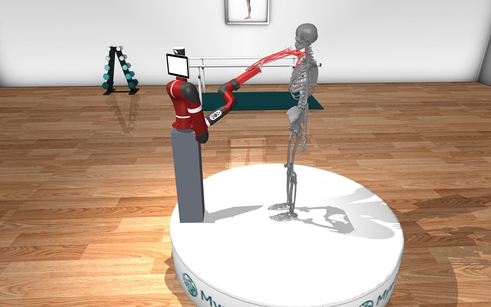

I work on motion control, Model Predictive Control and ROS 2 navigation, currently for a smart autonomous wheelchair. I am finishing an M.Sc. in Mechanical Engineering at McGill, with research in physical human–robot co-manipulation. My goal is medical and assistive robotics.

Control engineer, finishing an M.Sc. at McGill.
I like control problems where the model is never quite right: a wheelchair carrying a passenger whose weight changes, a quadruped picking up a payload, a cobot sharing a load with a person whose hand trembles. My work is building models good enough to control with, and controllers robust enough to cope with what the models miss.
Today I work remotely as a Robotics and Control Engineer at a robotics startup, on navigation and motion control for a smart wheelchair. Before that I built a medical device prototype from circuit to app. I want to bring this mix of control theory and hands-on engineering to a medical or assistive robotics team.
Control and robotics work across industry and research.
Navigation and motion control for an electric wheelchair at a robotics startup, built on ROS 2 and Nav2.
How should a cobot share a load with a person who has tremor? I tuned a Sawyer cobot under admittance–impedance control while coupled to a MyoSuite arm model.
Full-body Newton–Euler model of a quadruped, real-time MPC in MuJoCo, and reinforcement learning to correct dynamics the analytical model misses.
A working medical device prototype that sets cuff pressure from each user's measured limb occlusion pressure.
Industry, research and teaching.
What I bring to a control or robotics team.
Model Predictive Control, optimal control, admittance and impedance control, feedback design, MATLAB/Simulink
ROS 2, Nav2, MuJoCo, Gazebo, dynamic modeling, reinforcement learning for control
STM32, ESP32, analog circuits, signal processing; Python, C/C++, MATLAB
One book chapter, one accepted conference paper, one IEEE journal paper under review, two more under submission.
Two engineering degrees and three McGill awards.
Open to control, robotics and mechatronics positions from January 2027.